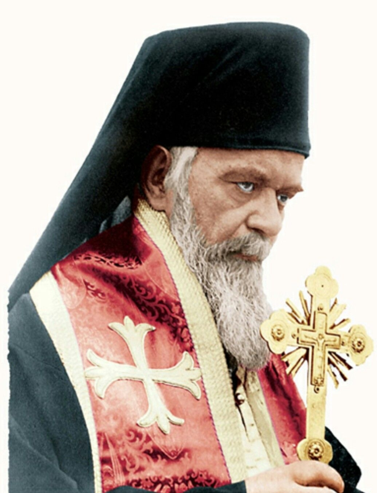
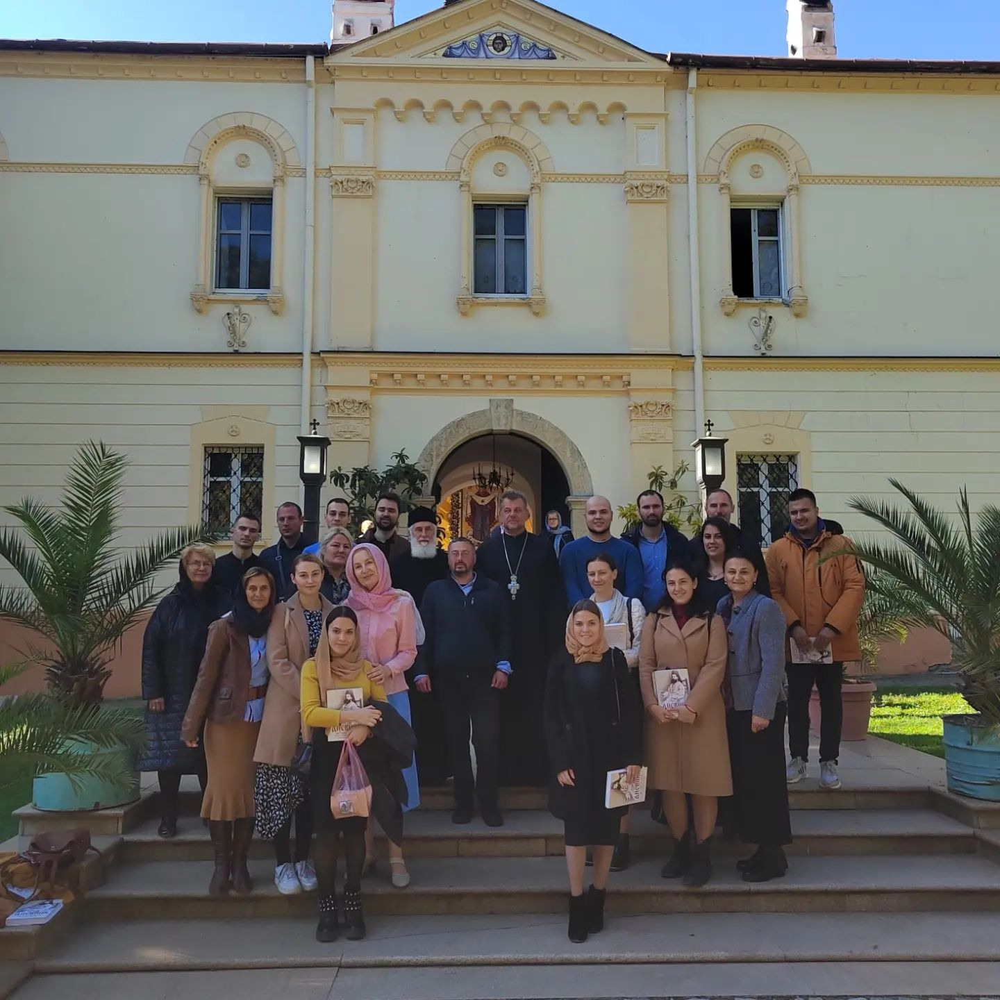
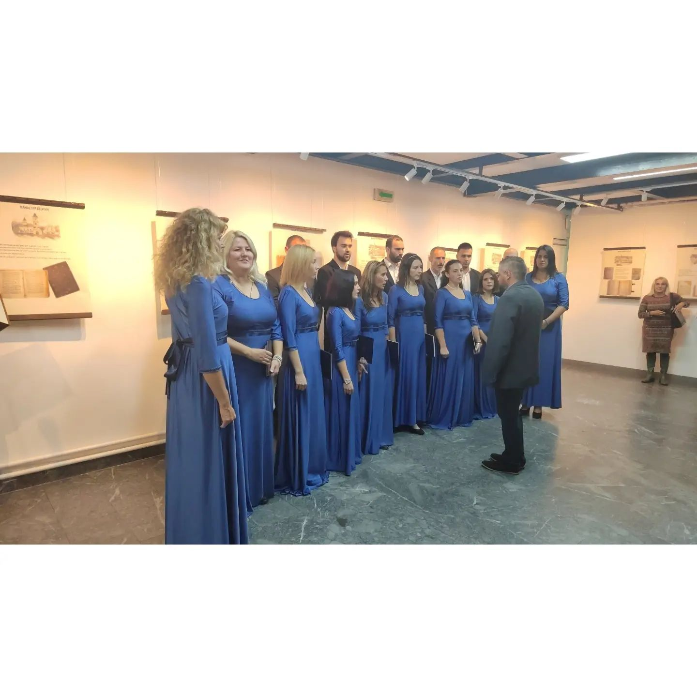
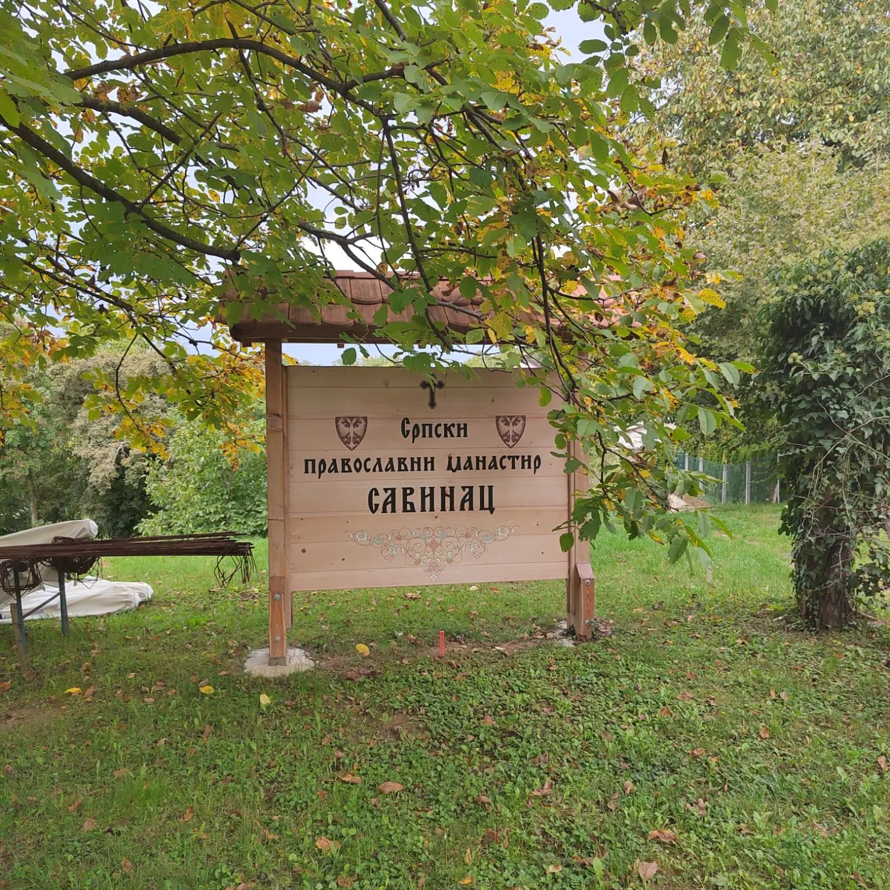

Хор Свети Владика Николај - Нова Пазова
Благословом Епископа сремског Господина Василија, 2005.године основан је мешовити хор “Св. владика Николај Српски”, који својим појањем доприноси лепоти богослужења.
Догађаји на којима смо учествовали
У Недељу 16. 10. 2022. о Св. Дионисију Ареопагиту, наш хор је био у посети Манастиру Гргетегу, где смо били на Литургијском сабрању са нашим Старешином протојерејом О. Зораном, братством и сестринством манастира. Благодат ове Светиње и топлина срдачне добродошлице сестара се речима не може описати, већ само лично доживети. Хвала Оцу Архимандриту Доситеју на благослову да дођемо и певамо на Св. Литургији као и сестрама на љубави пажњи које су нам пружиле. Отац Архимандрит нас је на растанку све даривао књигом у издању манастира "Дневник др Георгија Летића" и упутио позив за што скорије окупљање!
У среду 12. 10. 2022., имали смо част да након премијерне промоције у Владичанском двору (Сремски Карловци), учествујемо на промоцији књиге "Рукописне књиге у библиотекама фрушкогорских манастира" и у градској библиотеци у Београду. Велико хвала организатору ''Српска читаоница у Иригу'' који су нам још једном указали поверење. Дружење смо наставили у хотелу "Москва" где смо уз освежење и колаче сабирали утиске са поменуте промоције.
У недељу 09. 10. 2022. у Новој Пазови наш хор је са радошћу дочекао свог Владику Сремског г. Василија који је у Храму Свете Тројице рукоположио Александра Милановића у чин ђакона. На многаја љета брате Александре, да са радошћу и смирењем служиш нашем народу и Цркви.

У суботу 01. 10. 2022., наш хор је овом приликом посетио урушени средњовековни манастир Савинац у северном делу Фрушке Горе. Заједно са Мати Теодором помолили смо се Господу да њој и нашем народу да снаге да обновимо ову светињу посвећену преносу моштију светог Саве. Захваљујемо се Мати Теодори на разговору и дивним утешним поукама које нам је пружила.
